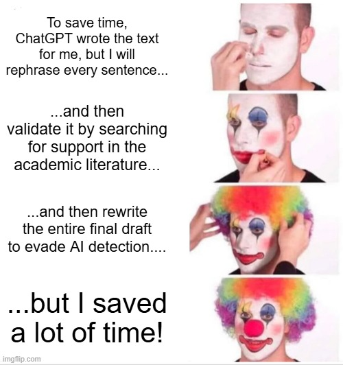
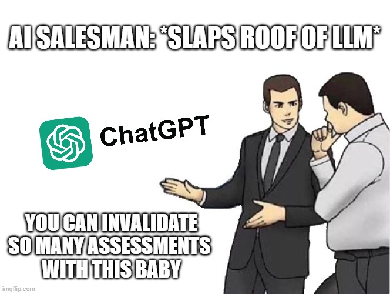

My name is Alec Sloman, and I am a pre-service teacher at La Trobe University. I came to teaching through a difficult personal experience of schooling. As a student, I was socially awkward, often disengaged, and uncertain about the purpose of what I was being asked to learn. Over time, that frustration became open resistance, and I know now that I made life hard for teachers who were trying to help. Looking back with more maturity, I see my experience as evidence of how easily students can be disconnected when school feels like compliance instead of growth. That perspective now shapes my professional identity: I want to create classrooms where students who feel alienated still have a clear pathway back into learning.
My schooling years coincided with an era where high-stakes testing strongly influenced classroom practice. In many subjects, learning felt narrowed to test preparation, while curiosity, creativity, and critical thinking seemed secondary. Even when individual teachers attempted to connect learning to my interests, the wider system constrained what was possible. I often felt reduced to performance data rather than seen as a developing person. I never completed high school in the traditional pathway, instead earning a GED and later moving to Australia to study Music Production at TAFE. Although I cared deeply about music, I still struggled because I had not yet learned how to learn effectively. Completing that course was important, but it did not immediately restore my confidence in formal education. At the time, I believed self-directed learning was my only viable option.
Teaching myself software development changed that trajectory. Programming gave me structure, autonomy, and visible progress, and it opened a twenty-year career across IT and software development. For the first time, learning felt empowering because effort produced tangible outcomes. After many years in industry, however, I began to want work that was more directly meaningful. An unexpected opportunity to teach a software development boot camp became a turning point. Despite having no formal teacher training at the time, I discovered that supporting learners was the most purposeful work I had done. I loved helping people move from uncertainty to competence, and I was especially motivated by students who doubted their own ability. That experience confirmed that education was not something I needed to avoid; it was where my professional strengths and personal values could meet.
As I prepare to become a secondary teacher, I bring an interdisciplinary background in software development, music production, and carpentry. I aim to teach technology and design, while also engaging my interests in history and civics to build broad, connected learning experiences. My teaching goal is to combine high expectations with practical support: clear success criteria, authentic tasks, and explicit instruction in how to learn, not just what to produce. I am particularly committed to helping students who feel out of place in school, because I understand that experience firsthand. In my classroom, digital tools should expand access and agency rather than distract from learning. Ultimately, I want to help young people find direction earlier than I did, develop confidence in their own capabilities, and leave school with both knowledge and a sense of possibility.
Latest Entries
Blog
Short-form reflections and insights on education topics.
AI
777 words · 4 mins read
For Learning, Toil is Not Optional
Critical reflection on why offloading effort to AI can weaken the conditions required for durable human learning.
Alec Sloman
Recently while browsing the internet, I was served an ad by Anthropic—the creators of Claude— which claimed that "toil is optional." Ordinarily I ignore sensationalist PR slop, but as a software developer I recognise that it is not entirely hyperbole. As of late 2025, coding agents such as Claude Code and Github Copilot demonstrate capabilities that would have been difficult to fathom even a few years ago.
Much of the routine burden of software development—repeating familiar patterns, tracking down elusive bugs, maintaining documentation, and managing dependencies—is being reduced at a rapid pace.
While toil in software development is increasingly viewed as a liability to be minimised, with education it's a different story because toil plays a completely different role. Far from being a liability, it is formative. It is indispensable. The effort involved in grappling with material is inseparable from the biological processes through which understanding is built. When that struggle is offloaded, we remove the conditions under which learning can occur and mastery can develop.
A 2025 study from the MIT Media Lab on AI-assisted writing found clear differences in brain activity1:
EEG revealed significant differences in brain connectivity: Brain-only participants exhibited the strongest, most distributed networks; search engine users showed moderate engagement; and LLM users displayed the weakest connectivity.
Participants wrote an essay either unaided, with search engines, or with LLMs. While the study measures electrical activity via Electroencephalography, prior developmental research suggests that changes in EEG connectivity can track (though not directly measure) underlying processes such as Synaptogenesis and Myelination2. Any observed reduction in neural engagement should therefore be interpreted cautiously: it may indicate less coordinated or less demanding network activity, which could correspond to conditions that are less conducive to synaptogenesis, rather than implying a direct reduction in synaptogenesis itself.
While this relationship is not definitively established, for the purposes of a blog-level argument, the connection is sufficiently well-supported to justify a cautious proxy: I am comfortable treating reduced EEG engagement as indicative of reduced conditions for synaptic development, given the broader claim that learning is metabolically and cognitively effortful—that it requires a degree of toil to drive the neural changes we associate with durable understanding. See Bjork & Bjork (2020)3 for more on that.
With that disclaimer established, now imagine a field of tall grass. Each time you walk between two landmarks—a boulder, a stream, a stand of trees—you press down a faint trail. That is synaptogenesis: the path begins to exist. Walk it repeatedly, and the trail hardens, the ground compacts, and movement becomes faster. That is myelination: the path becomes efficient. A brain that labours lays down paths and reinforces them. A brain that offloads too early walks less ground—and builds fewer roads. Mastery requires walking those paths again and again.
Now consider LLMs. During training, a model traverses an immense number of possible paths between conceptual “landmarks,” adjusting its internal weights through repeated passes over data. Modern training runs involve on the order of 1026 discrete computations—a scale of effort no human could approximate. This process is not magical; it is iterative and exhaustive. Each pass reinforces certain pathways and weakens others, gradually producing a system that can move reliably between ideas. Without that sustained computational labour, the model would have no coherent way to navigate those relationships at all.
Seen in this light, the apparent fluency of an LLM is the product of accumulated work rather than inherent capability. The same principle holds for human learners. When we look past the surface, what appears effortless is underwritten by repetition and reinforcement. The difference is that, in machines, the toil is hidden in training runs, and in humans, it is hidden in practice. When a learner is handed the finished artifact—the essay—they are given the outcome without engaging in the process that builds those pathways.
Returning to our visual metaphor, the paths are not walked. The trails are not cut. The roads are never consolidated. The learner may hold a finished piece of writing, but they remain in the field, without the means to move from one landmark to the next.
Now, what should we make of all this? We cannot simply ban LLMs. Instead, we need to make cognitive toil desirable again. This runs against the prevailing framing of such tools, where toil is treated as inefficiency to be eliminated. But the evidence suggests otherwise: when the struggle is removed, so too are the conditions under which learning is built.
While AI companies search for toil to eliminate, we must ask whether learning can survive without it. Human intelligence still appears to require a metabolic price of admission. Toil is that price.
References
Kosmyna, N., Hauptmann, E., Yuan, Y. T., Situ, J., Liao, X.-H., Beresnitzky, A. V., Braunstein, I., and Maes, P. (2025). Your brain on ChatGPT: Accumulation of cognitive debt when using an AI assistant for essay writing task. MIT Media Lab publication. https://www.media.mit.edu/publications/your-brain-on-chatgpt/
Bosch-Bayard, J., Biscay, R. J., Fernandez, T., Otero, G. A., Ricardo-Garcell, J., Aubert-Vazquez, E., Evans, A. C., & Harmony, T. (2022). EEG effective connectivity during the first year of life mirrors brain synaptogenesis, myelination, and early right hemisphere predominance. NeuroImage, 252, 119035. https://pubmed.ncbi.nlm.nih.gov/35218932/
When I started studying education at La Trobe University, I did not fully anticipate how indispensable information design was to the practice of teaching. In retrospect, of course it makes perfect sense, but still, I was initially astonished by the breadth and depth of just this one field. Case in point, through researching the terms "chartjunk" and "hairball diagram" I encountered the eccentric and arcane works of Edward Tufte - and have enjoyed reading those tremendously.
Now, although we were instructed to design a traditional infographic, I made the conscious and admittedly risky (from a marking perspective) decision to make a collection of memes instead. What's more, I did so on the basis of my own preferences and of a single conversation with a friend and mentee who recently completed highschool. I asked them about the teachers who had the most enduring impact, and what specifically made the difference. To my delight, they cited the use of image format memes. Relating this to my own experience: I remember many memes but very few infographics. To keep the final product clear and easy to understand, I constrained each meme to one claim, used familiar meme templates, and paired each visual with explanatory text so the meaning was clear even if the joke did not land.
For the topic I elaborated on my blog post which discusses an article by the MIT Media Lab called "Your Brain on ChatGPT", and while I wrote about this on the LMS forum I wanted to illustrate some key aspects of my reflection in various meme formats to test the theory of whether they would be impactful. I also arranged the memes in a deliberate sequence: first, the false promise of "toil is optional" (time and effort); second, epistemic reliability (fabricated citations); third, systemic consequences (assessment integrity and the learner-teacher arms race). And while I believe that the memes speak for themselves - and they got good play on Reddit - my commentary now sits directly below the images.

The first meme emphasizes that LLMs often do not deliver on the core promise of saving time, but instead create new, laborious complications to overcome. Ironically, while you spend less time writing and understanding text, you spend more time trying to bypass the assessment without detection.The second meme emphasizes that LLMs are known for inventing completely false citations, and the absurdity of relying on them in your workflow.

The third and final meme speaks to my personal frustration about how LLM use can diminish the reliability of important assessment types like written essays and creates a toxic arms-race dynamic between learners and teachers.
One challenge in the creation process was balancing humour with academic seriousness: too much irony and the point gets lost; too much exposition and the meme format collapses. My strategy was to keep each image focused on one claim, then use short written commentary to anchor interpretation and connect each visual back to the educational argument. Another challenge was the genre risk itself. I addressed that by being explicit about intent and by ensuring the sequence still functioned like an infographic narrative, even if the visual language was unconventional.
520 words · 3 mins read
Growing up in the 80's and 90's, I recall with great fondness the educational software of the so-called "computer lab" era. Therefore, for the gamification resource, I chose to follow in the footsteps of classic games such as Word Munchers, Midnight Rescue, and the Oregon Trail to develop a browser-based learning game that helps the player memorize the APA7 reference style. The game, called "APA7 Challenge", can be found at the following URL: https://alexsoloman173-lgtm.github.io/APA7-challange/
The game employs a falling tiles style ala. Tetris: under time pressure from falling "reference fragments" the player must identify and arrange a complete APA7 reference before the timer runs out. As they correctly identify and assemble reference components, the player accumulates points, with higher scores awarded for accuracy and speed. In other words, the core gamification elements are time pressure, score accumulation, performance-based rewards, immediate feedback on correct assembly, and a clear win/lose condition. The core learning mechanic is still sheer repetition: where through repeated, interactive exposure to the component categories of the APA7 reference style, the learner can quickly master the format.
This topic was strongly related to my AT1 and AT2 submissions. In my AT1 submission, I assessed two research papers on game-based learning, the main takeaway being that although it has a long and storied history, rigorous research into its effectiveness - especially with regards long-term learning outcomes - is fragmented and spotty. Our group AT2 submission extended this research, exploring how teachers could best understand and implement game-based learning: not as a silver bullet to motivate disengaged learners, but as a highly targeted activity where low-stakes decision making and/or repetition are important aspects of the learning topic. That rationale is exactly why I selected these mechanics: the objective here was not broad conceptual inquiry, but procedural fluency with APA7 reference structure, and timed assembly plus scoring keeps students engaged while forcing repeated recall of the correct sequence and components.
To keep the game from overshadowing the educational objective, I deliberately kept the loop narrow: one task, one format, one success criterion (assemble a correct APA7 reference). There are no unrelated narrative layers or cosmetic reward systems competing for attention. The "fun" component is there to sustain effort and attention, but the points only come from demonstrating the target skill, so gameplay and learning objective remain tightly coupled.
The game itself is built with Phaser.js, Introduction To Phaser.js - GeeksforGeeks, a JavaScript framework for casual and educational games. Not wishing to spend too much time coding it, I received help from Github's Co-pilot. The game itself is very basic and can be considered a minimum-viable-product and nothing more. One challenge in the design process was controlling scope: there is always a temptation to add extra mechanics, polish, and features that are fun but pedagogically noisy. My solution was to keep the prototype intentionally constrained and to privilege clarity of the reference-building task over entertainment complexity. While I have no plans to develop it further, I will say that the core gameplay loop seemed to be effective and helped me to consolidate my own memorization of the APA7 format.
452 words · 3 mins read
Developing this resource was both fun and interesting. As an expert in software development and a close follower of deep learning applications, I came in with pretty serious advantages. It also happens that I built a lesson plan generator in week 2 of the course - integrated into my slide authoring tool SlideKey (see the resource for more information) - just for fun! So I'd already learned quite a lot about how to apply LLMs to this specific task, and had a battle-tested architecture ready to go.
Thus, my approach was just to rebuild it, with an LLM-coding agent, with a minimum of prompts. I then asked the agent to write a blog post - from its own perspective and in its own words - analyzing the problem space, describing our solution, and comparing the outputs of our "harness" versus "one-shot" prompt. I have to say: reading the agent's post was delightful.
The result is far from perfect, and the artifact that it ultimately generated could use a lot more work. But for 10 prompts - plus an 11th for the blog post - I am pleased with the result. Start by reading the download called "Lesson Planning is Not a Prompting Problem", and then look at the one-shot and harness versions of the lesson plan.
To answer the process questions directly: this was definitely not my first use of an LLM; I came into the task with prior experience building a lesson-plan generator, which shaped how I framed the prompting work. The main factors I considered were curriculum alignment, learner appropriateness, specificity of lesson structure, and output reliability: all areas where I already knew were problematic for a one-shot prompting approach. In practical terms, I harnessed the model toward concrete planning moves - clear learning intentions, worked examples, checks for understanding, and sequencing that matched an introductory linear equations lesson.
I was still surprised in a few places. The model could produce polished-sounding pedagogical language quickly, but it could also drift into useless filler or thin instructional logic if left under-constrained, which reinforced the value of the harness approach over one-shot prompting. So yes, I was satisfied overall, but conditionally: satisfied with the speed of ideation and baseline structure, not fully satisfied that it would survive contact with an actual classroom. The strengths were pace, coherence, and useful draft scaffolding; the weaknesses were uneven differentiation, occasional vagueness, and the need for substantial teacher judgment before classroom use.
And just in case you want to see a demonstration, this video (sorry it's 40 minutes long) actually demonstrates the whole activity in a conversational style.
Video Walkthrough
If the embedded player is blocked in your browser, open the video directly here: Watch on YouTube.
332 words · 2 mins read
During the months between enrolment and commencement, I had some time to kill and decided to brush up on astrophysics: the cosmological redshift in particular. For those who aren't familiar, it's in the same category as the doppler effect - which I love for its eminent observability. No experiment or special instruments required: just the sound of the ambulance siren pitching up as it approaches, and pitching down as it drives away, the pressure wave compressed by forward motion and elongated by backward motion.
Now, one of the first things that you learn in modern cosmology is about the expanding nature of the universe. Despite appearances, everything in the universe is, in fact, moving away from everything else. The space between objects is itself expanding. But when you look out at the stars, you can't see this with the naked eye. In this regard, it's quite unlike the doppler effect because you need special instruments to observe it. But, the same principle applies because as light travels through space - and the space itself expands - the emitter is moving away from the observer, and if we transfer principles from sound to light - and they are both waves - then we should expect the light to "pitch down" and change wavelength: the cosmological redshift. And of course, it does exactly that.
But again, it's not observable to the naked eye, and therefore you may find yourself a bit lost trying to fathom it. And this is why I built the cosmic chronometer. I wanted to develop a visualization that communicated the relationship between space and time - mediated by the lightspeed constant - to show the cosmic inflation intuitively. I don't know how I did. It is a work in progress. I recognize that while it can answer questions, it doesn't supply them. Pedagogical scaffolds are missing. But, I'm proud of it, and for that reason I think it deserves a place in my portfolio of educational design work.
314 words · 2 mins read
I designed this resource to solve a common classroom problem: teachers often ask "Any questions?" and receive little reliable information about who is following the lesson. Status Cards create immediate, non-optional feedback from every student, not just the most vocal or confident. By asking all learners to indicate a status color at key checkpoints, I can quickly identify patterns of understanding and confusion across the whole room. This makes instructional response more equitable and evidence-based, because I am acting on class-wide data rather than assumptions. The card format is simple, fast, and low-tech, which makes it practical for routine use without interrupting lesson momentum.
A second purpose is metacognitive: the cards prompt students to ask themselves, "How well do I understand this right now?" That self-check matters because many learners move through lessons passively unless prompted to monitor comprehension. By embedding this reflection as a normal classroom routine, students practice judging their own understanding and identifying when they need support. Over time, this can strengthen self-regulation and help students take more responsibility for their learning. From a design perspective, the color system supports rapid interpretation for both students and teacher, while the clear labels reduce ambiguity in how each status should be used.
The third function is communication quality. If students select green, they are prompted to briefly demonstrate learning; if they select yellow, red, or grey, they are prompted to articulate uncertainty, confusion, or missing information. This shifts classroom talk from vague confidence statements to actionable evidence. Critically, the tool still requires strong facilitation to avoid superficial responses, so my next improvement would be adding sentence stems and exemplar responses for each color. I would also track repeated status patterns over several lessons to inform differentiation and targeted reteaching. Overall, this resource shows how a simple digital/print tool can be used creatively and effectively to improve formative assessment, student voice, and instructional decision-making.
350 words · 2 mins read
I built SlideKey because most slide-authoring tools work against the way I naturally plan teaching materials. My preferred workflow is text-first: outline ideas, sequence explanation carefully, then shape presentation from that structure. Conventional slide software tends to privilege drag-and-drop layout, visual tweaking, and disconnected text boxes, which makes it harder to think clearly about knowledge progression. It also has very little domain knowledge about education. SlideKey was my attempt to build an authoring environment that starts from instructional thinking rather than generic presentation software conventions. Instead of asking me to design slides as isolated canvases, it lets me write and structure content more like an editor, then generate a stronger presentation layer from that foundation.
What makes the tool educationally significant is that the design frameworks are built into the authoring model itself. In the SlideKey project, education profiles and framework registries explicitly include Mayer's multimedia principles, Universal Design for Learning, and Cognitive Load Theory as defaults for presentation generation. That matters because it shifts these frameworks from after-the-fact checklists to active design constraints. I also used pretext.js in the broader SlideKey workflow to solve a common classroom presentation problem: text that looks acceptable while authoring but becomes too small, too dense, or poorly fitted when displayed. By using a measurement-based layout approach, the tool can size and fit text more deliberately, reducing overload and improving legibility.
Critically, I did not build SlideKey as a commercial product. I built it as a personal teaching tool for producing better educational materials. That intention shaped the project in a useful way: instead of chasing every presentation feature, I focused on problems that matter in real classrooms, such as text overload, weak visual hierarchy, and the absence of pedagogy-aware defaults in mainstream tools. If I continue developing it, my next priority would be tighter classroom-facing templates and more explicit support for checks for understanding, worked examples, and annotation-based teaching sequences. Overall, SlideKey demonstrates my capacity to combine software development knowledge with instructional design thinking in order to build tools that are creatively ambitious, pedagogically purposeful, and directly useful in my future teaching practice.
898 words · 5 mins read
As part of my thinking process for the EDU1001 AT3 paper, I took a detour into diagram-making. It was productive as a form of reflection, but ultimately the project stalled. This post explains why.
For AT3, we were asked to choose one of three topics. I chose this one:
Explain and justify the importance of students developing reading and writing skills across a range of subject/discipline areas in the primary and/or secondary years, establishing clear links to one or more of the evidence-based theories, frameworks or models of reading and/or writing covered in EDU1001/EDN1001.
I sat down in the library and wrote a 2000-word wall of text just to see what emerged. Neuroplasticity, Scarborough's Reading Rope, disciplinary literacy - it all came tumbling out in a jumble. Only after turning those notes into a rough draft did the underlying idea become clear.
Using the visual metaphor of Scarborough's Reading Rope, I thought I could create a diagram linking subject areas, cognitive modalities, and professional disciplines.
Once I had that idea, it was hard to return to the essay itself. I became fixated on the visualization for several days. Here is what I learned.
First: according to my research, there is no exhaustive taxonomy of cognition. Or at least, none explicitly presented as such. The closest thing I found was The Cambridge Handbook of Thinking and Reasoning, which, by my reading, outlined 25 distinct cognitive modalities.
From there, the next problem emerged: how to connect those modalities to both school subjects and professional disciplines. The broader idea was simple enough. If cognitive modalities linked school subjects to professional practice, then perhaps we could answer questions like: Why should a future engineer care about English Literature?
At a conceptual level, this was compelling. Part of me wanted a kind of "God's eye view" of the learning sciences, and Scarborough's Reading Rope seemed like the perfect metaphor for showing how subject areas cultivate the cognitive capacities later required in professional life.
In practice, however, the methodological problems were immense.
How could one prove that a specific cognitive modality belonged to a given subject area? Intuition and experience might produce something like this:
Heading
Items
Language / English
Similarity, Concepts and categories, Relational representation, Analogy, Language-based thinking
Mathematics
Deductive reasoning, Mathematical cognition, Thinking in working memory
It failed to account for the enormous variability among both learners and teachers. For example, claiming that analogical reasoning belonged more to Languages than Mathematics quickly became untenable. Some mathematics teachers rely heavily on analogy; some English teachers hardly use it at all. Any clean categorization discarded too much of the real world to remain convincing.
So I considered a weighting system instead. Perhaps each cognitive modality could be related to subject areas probabilistically - say, on a 1-5 scale - based on teacher surveys and statistical aggregation.
Of course, I had no means of collecting data at anything close to a meaningful scale. The only feasible option was to rely on an LLM to estimate the relationships. I knew this was methodologically indefensible, but I wanted to see what the graph looked like anyway.
The result was not elegant or explanatory. It was a hairball. Worse, the edge weights themselves could easily have been nonsense.
The problem intensified when I tried to connect cognitive modalities to professional disciplines. Here, at least, there was a reliable taxonomy: the Australian Bureau of Statistics OSCA classification, containing 421 occupational categories.
But the same issue remained. How could an undergraduate student meaningfully map cognitive modalities across 421 professions? Again, an LLM could only approximate based on training data.
Still, I pressed on because I wanted to know whether the diagram itself could ever become useful or explanatory if supplied with sufficiently good data.
The answer, unsurprisingly, was this:
You could technically trace pathways between subject areas and professions through shared cognitive modalities, but the graph was so dense it became illegible.
At that point, the project had clearly failed in its original aim. The diagram no longer communicated anything meaningful at a "God's eye view," and I had not even begun integrating the actual visual metaphor of Scarborough's Reading Rope.
Eventually I realized the concept only worked if I made several major concessions:
The taxonomy of cognition had to remain non-exhaustive.
The relationships between subjects and cognitive modalities had to be radically simplified.
The OSCA professional taxonomy had to be abandoned in favour of much broader abstractions.
Even so, I wanted to see how far the idea could go. So I manually selected the edges between subject areas and cognitive modalities, then replaced professional disciplines with broader "personal and societal outcomes."
This was the result:
Visually, it captured something of Scarborough's Reading Rope. But the underlying ontology - and especially the problem of assigning meaningful edge weights - was so compromised that I eventually had to concede defeat.
Still, the exercise taught me a few things.
First: literacy, like the brain itself, is extraordinarily interconnected. Tug on one thread and the entire system responds. Could such a system ever be meaningfully summarised in a single infographic? Perhaps. But it would require far more time, expertise, and methodological rigour than I could bring to the project.
Second: perhaps the "God's eye view" is not actually necessary. Maybe it is enough to recognise that education operates within a profoundly complex system, and to focus on teaching the students in front of us as well as we can.
Third: perhaps an infographic is simply the wrong medium. Maybe something this dense is better approached through metaphor, narrative, or poetry.
So, in the end, this was what remained:
Learning, like the brain
Is a galaxy of stars
Too vast to fathom
358 words · 2 mins read
Teachers and Dragons is a strange and genuinely intriguing little project: a teaching playbook built using the logic of Powered by the Apocalypse tabletop RPGs. It is still very much in its alpha stage, and that is important to say upfront. It has not been properly playtested, balanced, or refined through long-term classroom use. At this point, it is less a finished game than an experimental genre-piece — an attempt to look at teaching through a very different lens.
Even so, it is surprisingly instructive.
Most books about teaching live at the level of theory, philosophy, or broad advice. Even the more practical ones often stop short of breaking classroom practice into explicit procedures with clear stakes and conditions. Teachers and Dragons tries to do exactly that. Every teaching “move” is framed in a structured way that asks:
What actual classroom events trigger this move?
What professional trait or capacity helps it succeed?
What happens if it works — and what happens if it doesn’t?
That structure turns a lot of invisible teaching judgement into something concrete and discussable. If a teacher resets attention, presses for evidence, checks for understanding, models thinking aloud, or changes pacing, the game treats those not as vague strategies but as observable actions with consequences. Sometimes the move lands cleanly. Sometimes it only partially works. Sometimes, as the framework puts it, “the room makes a move” in return through distraction, confusion, resistance, loss of momentum, or social tension.
The system itself revolves around six teaching stats: Clarity, Presence, Rapport, Diagnosis, Rigor, and Momentum. Together they describe the professional capacities underneath effective classroom action. The archetypes — Instructor, Socratic, Facilitator, Coach, Performer, Scholar, and Warden — are not fixed identities but tactical styles that can be combined depending on what the room needs at a given moment.
Realistically, many people who read Teachers and Dragons may never actually play it as a game. But that almost misses the point. Simply reading the moves is valuable because the format forces teaching decisions into the open in a very direct way. It exposes the triggers, pressures, trade-offs, and risks that experienced teachers navigate constantly but rarely describe explicitly. As a result, the project works not only as a playful RPG experiment, but also as a surprisingly sharp lens for examining classroom practice itself.
Official occupational classification framework. Cited in the About section to contextualise the ICT Trainer role.
Hutton, J. S., Dudley, J., Horowitz-Kraus, T., DeWitt, T., and Holland, S. K. (2019). Associations between screen-based media use and brain white matter integrity in preschool-aged children. JAMA Pediatrics. https://jamanetwork.com/journals/jamapediatrics/fullarticle/2754101
Peer-reviewed neuroscience study on screen exposure and brain development. Cited in the blog post on AI and learning.
Kosmyna, N., Hauptmann, E., Yuan, Y. T., Situ, J., Liao, X.-H., Beresnitzky, A. V., Braunstein, I., and Maes, P. (2025). Your brain on ChatGPT: Accumulation of cognitive debt when using an AI assistant for essay writing task. MIT Media Lab publication. https://www.media.mit.edu/publications/your-brain-on-chatgpt/
MIT study showing reduced neural engagement when AI handles writing. Cited in the blog post as primary evidence for cognitive offloading risks.
Sparrow, B., Liu, J., and Wegner, D. M. (2011). Google Effects on Memory: Cognitive Consequences of Having Information at Our Fingertips. Science. https://doi.org/10.1126/science.1207745
Influential study on how search engine access changes memory encoding. Cited in the blog post discussion on transactive memory.
University library guide for citing AI-generated content in APA7 format. Referenced for citation methodology throughout the portfolio.
Bosch-Bayard, J., Biscay, R. J., Fernandez, T., Otero, G. A., Ricardo-Garcell, J., Aubert-Vazquez, E., Evans, A. C., and Harmony, T. (2022). EEG effective connectivity during the first year of life mirrors brain synaptogenesis, myelination, and early right hemisphere predominance. NeuroImage, 252, 119035. https://pubmed.ncbi.nlm.nih.gov/35218932/
Neuroscience study on early brain connectivity development. Cited in the blog post to support claims about developmental neural plasticity.